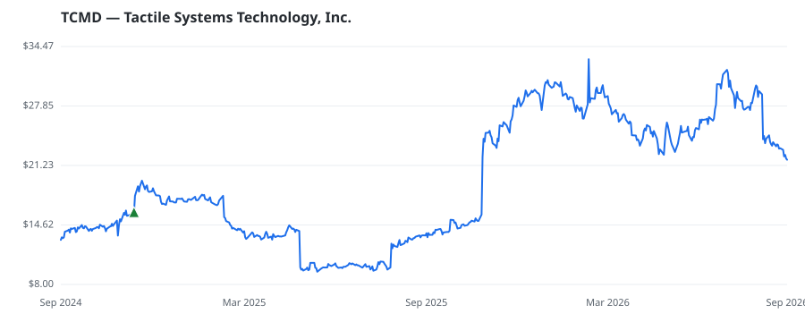

bullish · bearish · n/a — dots: price>SMA10 · SMA10>SMA50 · SMA50>SMA200 · up>down volume (20d)
Health Care Equipment & Services · small cap · ★ 1 buyer(s) sit on a committee that regulates this industry
Members who bought TCMD earned a dollar-weighted +36.3% from their disclosure dates, versus +29.0% for the S&P 500 over the same holding windows (+7.3% alpha).

▲ green = a disclosed purchase · ▼ red = a disclosed sale (plotted on disclosure date)
Tactile Systems Technology Inc is a medical technology company. The company is engaged in developing and providing medical devices for the treatment of chronic diseases. The firm's proprietary platform flexitouch system, provides a home-based solution for lymphedema patients. The entire system is another home solution for patients with chronic swelling and actitouch system for chronic venous insufficiency patients that may be worn throughout the day. SURGICAL & MEDICAL INSTRUMENTS & APPARATUS · website
| Revenue | $329.5M | Net income | $19.1M |
|---|---|---|---|
| Operating income | $29.3M | Diluted EPS | $0.82 |
| Assets | $273.9M | Equity | $218.9M |
| Member | Chamber | Out-performer | Disclosed buys $ | Return on buys |
|---|---|---|---|---|
| Tina Smith ★ | senate | — | $75K | +36.3% |
Disclosed $ figures are bracket midpoints — filings report ranges (e.g. $1,001–$15,000), not exact amounts.